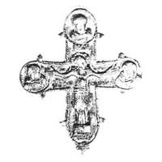

Catalog › CE-0672 · KOR2003-II.1.1.51
Valvă de față de encolpion cu reliefuri netezite, urme de inscripții adânci
sec. sfârșit XII–XIII (1101–1300) · Kiev, Ucraina · Muzeul de Istorie a orașului Kiev (MIK), inv. А-4892/2
single valve of a reliquary cross, aramă; c. sfârșit XII–XIII (1101–1300); found at Kiev, Ucraina; kept at Muzeul de Istorie a orașului Kiev (MIK).


Identificare
- Categorie
- Valvă izolată
- Material
- Aramă
- Tehnică
- Turnare în relief; Gravare (incizie)
- Dimensiuni
- Î 78 × L 70 mm
Iconografie
- Descriere avers
- Valvă de față; reliefuri netezite. Urme de inscripții adâncite: în tăbliță IX; sub brațele lui Hristos litere neclare.
- Inscripții
- IX (în tăbliță)
Datare și atribuire
- Datare
- sec. sfârșit XII–XIII (1101–1300)
- Centru
- Necunoscut
- Tipologie
- Korzukhina–Peskova 2003, tip II 1 1
Descoperire
- Localitate
- Kiev
- Țară
- Ucraina
- Context
- Colecție (fără context)
Păstrare și referințe
- Colecție
- Muzeul de Istorie a orașului Kiev (MIK)
- Nr. inventar
- А-4892/2
- Bibliografie
- G. F. Korzukhina, A. A. Peskova, Древнерусские энколпионы. Нагрудные кресты-реликварии XI–XIII вв., Sankt-Petersburg, 2003 [Korzukhina–Peskova 2003], p. 67, cat. nr. II 1 1/51, reprodusă la Табл. 19 (planșe, p. 261). Bibliografie citată în sursă: Пекарська, Пуцко 1989, 86, рис. 1, 2.
- Figura
- Табл. 19
- Planșe
- Korzukhina–Peskova 2003, Табл. 19 (planșă fără paginație proprie în PDF; p. 261 tipărită)
- Observații
- Datare după Peskova: sec. sfârșit XII–XIII. Proveniență în colecție: din colecțiile lui V. D. Diadenko; intrat în 1989. Într-un articol de L. V. Pekarska și V. G. Pucko locul descoperirii este indicat ca Mijlocul Niprului (nota editorială). Coordonate: nu sunt date în sursă.
Citare: Corpus Encolpiorum, CE-0672, Valvă de față de encolpion cu reliefuri netezite, urme de inscripții adânci, https://vitaliejosanu1979-ux.github.io/primul-meu-proiect/piese/KOR2003-II.1.1.51/ (accesat 2026-10-17).